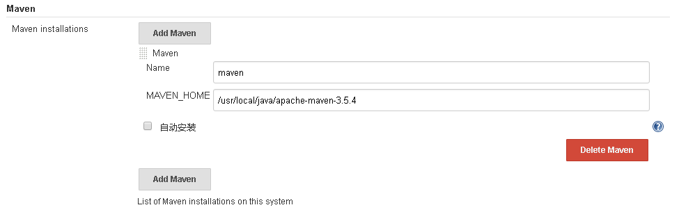

<!DOCTYPE html>
<html lang="en">
<head><meta name="generator" content="Hexo 3.8.0">
    <meta charset="utf-8">
    
    <title>Jenkins 持续编译 | Joe&#39;s Wiki</title>
    
    
        <meta name="keywords" content="jenkins">
    
    <meta name="viewport" content="width=device-width, initial-scale=1, maximum-scale=1">
    <meta name="description" content="Jenkins 是一个开源自动化服务器，可用于自动化各种任务，如构建、测试和部署软件，本文档是结合Jenkins，Java，Maven，Github实现持续自动化编译。 1. 思路&amp;amp;流程 安装 Java、Maven、Git、Jenkins 环境 配置 Jenkins 拉取 Github 项目 编译、单元测试 Maven 项目形成 war 包  2. 环境准备 由于 Maven 需要 jdk">
<meta name="keywords" content="jenkins">
<meta property="og:type" content="article">
<meta property="og:title" content="Jenkins 持续编译">
<meta property="og:url" content="https://joecnn.github.io/wiki-site/wiki/软件工程/devops/Jenkins 持续编译/index.html">
<meta property="og:site_name" content="Joe&#39;s Wiki">
<meta property="og:description" content="Jenkins 是一个开源自动化服务器，可用于自动化各种任务，如构建、测试和部署软件，本文档是结合Jenkins，Java，Maven，Github实现持续自动化编译。 1. 思路&amp;amp;流程 安装 Java、Maven、Git、Jenkins 环境 配置 Jenkins 拉取 Github 项目 编译、单元测试 Maven 项目形成 war 包  2. 环境准备 由于 Maven 需要 jdk">
<meta property="og:locale" content="en">
<meta property="og:image" content="https://joecnn.github.io/wiki-site/images/jenkins_jdk.png">
<meta property="og:image" content="https://joecnn.github.io/wiki-site/images/jenkins_maven.png">
<meta property="og:image" content="https://joecnn.github.io/wiki-site/images/jenkins_new_project.png">
<meta property="og:image" content="https://joecnn.github.io/wiki-site/images/jenkins_git.png">
<meta property="og:image" content="https://joecnn.github.io/wiki-site/images/jenkins_scm.png">
<meta property="og:image" content="https://joecnn.github.io/wiki-site/images/jenkins_build.png">
<meta property="og:image" content="https://joecnn.github.io/wiki-site/images/jenkins_output.png">
<meta property="og:updated_time" content="2019-02-08T06:45:30.925Z">
<meta name="twitter:card" content="summary">
<meta name="twitter:title" content="Jenkins 持续编译">
<meta name="twitter:description" content="Jenkins 是一个开源自动化服务器，可用于自动化各种任务，如构建、测试和部署软件，本文档是结合Jenkins，Java，Maven，Github实现持续自动化编译。 1. 思路&amp;amp;流程 安装 Java、Maven、Git、Jenkins 环境 配置 Jenkins 拉取 Github 项目 编译、单元测试 Maven 项目形成 war 包  2. 环境准备 由于 Maven 需要 jdk">
<meta name="twitter:image" content="https://joecnn.github.io/wiki-site/images/jenkins_jdk.png">
    

    
        <link rel="alternate" href="/atom.xml" title="Joe&#39;s Wiki" type="application/atom+xml">
    

    
        <link rel="icon" href="/wiki-site/wiki-site/favicon.ico">
    

    <link rel="stylesheet" href="/wiki-site/libs/font-awesome/css/font-awesome.min.css">
    <link rel="stylesheet" href="/wiki-site/libs/open-sans/styles.css">
    <link rel="stylesheet" href="/wiki-site/libs/source-code-pro/styles.css">

    <link rel="stylesheet" href="/wiki-site/css/style.css">
    <script src="/wiki-site/libs/jquery/2.1.3/jquery.min.js"></script>
    <script src="/wiki-site/libs/jquery/plugins/cookie/1.4.1/jquery.cookie.js"></script>
    
    
        <link rel="stylesheet" href="/wiki-site/libs/lightgallery/css/lightgallery.min.css">
    
    
        <link rel="stylesheet" href="/wiki-site/libs/justified-gallery/justifiedGallery.min.css">
    
    
    
    


    
</head>
</html>
<body>
    <div id="container">
        <header id="header">
    <div id="header-main" class="header-inner">
        <div class="outer">
            <a href="/wiki-site/" id="logo">
                <i class="logo"></i>
                <span class="site-title">Joe&#39;s Wiki</span>
            </a>
            <nav id="main-nav">
                
                    <a class="main-nav-link" href="/wiki-site/">首页</a>
                
                    <a class="main-nav-link" href="/wiki-site/archives">归档</a>
                
                    <a class="main-nav-link" href="/wiki-site/categories">分类</a>
                
                    <a class="main-nav-link" href="/wiki-site/tags">标签</a>
                
                    <a class="main-nav-link" href="/wiki-site/about">关于</a>
                
            </nav>
            
            <div id="search-form-wrap">

    <form class="search-form">
        <input type="text" class="ins-search-input search-form-input" placeholder="Search">
        <button type="submit" class="search-form-submit"></button>
    </form>
    <div class="ins-search">
    <div class="ins-search-mask"></div>
    <div class="ins-search-container">
        <div class="ins-input-wrapper">
            <input type="text" class="ins-search-input" placeholder="Type something...">
            <span class="ins-close ins-selectable"><i class="fa fa-times-circle"></i></span>
        </div>
        <div class="ins-section-wrapper">
            <div class="ins-section-container"></div>
        </div>
    </div>
</div>
<script>
(function (window) {
    var INSIGHT_CONFIG = {
        TRANSLATION: {
            POSTS: 'Posts',
            PAGES: 'Pages',
            CATEGORIES: 'Categories',
            TAGS: 'Tags',
            UNTITLED: '(Untitled)',
        },
        ROOT_URL: '/wiki-site/',
        CONTENT_URL: '/wiki-site/content.json',
    };
    window.INSIGHT_CONFIG = INSIGHT_CONFIG;
})(window);
</script>
<script src="/wiki-site/js/insight.js"></script>

</div>
        </div>
    </div>
    <div id="main-nav-mobile" class="header-sub header-inner">
        <table class="menu outer">
            <tr>
                
                    <td><a class="main-nav-link" href="/wiki-site/">首页</a></td>
                
                    <td><a class="main-nav-link" href="/wiki-site/archives">归档</a></td>
                
                    <td><a class="main-nav-link" href="/wiki-site/categories">分类</a></td>
                
                    <td><a class="main-nav-link" href="/wiki-site/tags">标签</a></td>
                
                    <td><a class="main-nav-link" href="/wiki-site/about">关于</a></td>
                
                <td>
                    
    <div class="search-form">
        <input type="text" class="ins-search-input search-form-input" placeholder="Search">
    </div>

                </td>
            </tr>
        </table>
    </div>
</header>

        <div class="outer">
            
            
                <aside id="sidebar">
   
        
    <div class="widget-wrap" id="categories">
        <h3 class="widget-title">
            <span>categories</span>
            &nbsp;
            <a id="allExpand" href="#">
                <i class="fa fa-angle-double-down fa-2x"></i>
            </a>
        </h3>
        
        
        
         <ul class="unstyled" id="tree"> 
                    <li class="directory">
                        <a href="#" data-role="directory">
                            <i class="fa fa-folder"></i>
                            &nbsp;
                            Playing
                        </a>
                         <ul class="unstyled" id="tree">  <li class="file"><a href="/wiki-site/wiki/Playing/黑暗之魂2/">《 黑暗之魂2 原罪贤者 》白金攻略</a></li>  </ul> 
                    </li> 
                    
                    <li class="directory open">
                        <a href="#" data-role="directory">
                            <i class="fa fa-folder-open"></i>
                            &nbsp;
                            软件工程
                        </a>
                         <ul class="unstyled" id="tree"> 
                    <li class="directory open">
                        <a href="#" data-role="directory">
                            <i class="fa fa-folder-open"></i>
                            &nbsp;
                            devops
                        </a>
                         <ul class="unstyled" id="tree"> 
                    <li class="directory">
                        <a href="#" data-role="directory">
                            <i class="fa fa-folder"></i>
                            &nbsp;
                            docker
                        </a>
                         <ul class="unstyled" id="tree">  <li class="file"><a href="/wiki-site/wiki/软件工程/devops/docker/docker start/">Docker Start</a></li>  <li class="file"><a href="/wiki-site/wiki/软件工程/devops/docker/docker mysql/">Docker Mysql</a></li>  <li class="file"><a href="/wiki-site/wiki/软件工程/devops/docker/docker 镜像加速/">Docker 镜像仓库加速</a></li>  </ul> 
                    </li> 
                    
                    <li class="directory">
                        <a href="#" data-role="directory">
                            <i class="fa fa-folder"></i>
                            &nbsp;
                            git
                        </a>
                         <ul class="unstyled" id="tree">  <li class="file"><a href="/wiki-site/wiki/软件工程/devops/git/Git 基本操作/">Git 基本操作</a></li>  <li class="file"><a href="/wiki-site/wiki/软件工程/devops/git/Git 安装/">Git 安装</a></li>  <li class="file"><a href="/wiki-site/wiki/软件工程/devops/git/Git 标签/">Git 标签</a></li>  <li class="file"><a href="/wiki-site/wiki/软件工程/devops/git/gitignore不生效解决方法/">gitignore不生效解决方法</a></li>  <li class="file"><a href="/wiki-site/wiki/软件工程/devops/git/Git 介绍/">Git 介绍</a></li>  </ul> 
                    </li> 
                     <li class="file"><a href="/wiki-site/wiki/软件工程/devops/Jenkins 开机启动/">Jenkins 开机启动</a></li>  <li class="file active"><a href="/wiki-site/wiki/软件工程/devops/Jenkins 持续编译/">Jenkins 持续编译</a></li>  </ul> 
                    </li> 
                    
                    <li class="directory">
                        <a href="#" data-role="directory">
                            <i class="fa fa-folder"></i>
                            &nbsp;
                            linux
                        </a>
                         <ul class="unstyled" id="tree">  <li class="file"><a href="/wiki-site/wiki/软件工程/linux/How To Open A Port In CentOS 7 With Firewalld/">How To Open A Port In CentOS 7 With Firewalld</a></li>  <li class="file"><a href="/wiki-site/wiki/软件工程/linux/安装Python3/">安装Python3</a></li>  <li class="file"><a href="/wiki-site/wiki/软件工程/linux/常见问题收集/">常见问题收集</a></li>  <li class="file"><a href="/wiki-site/wiki/软件工程/linux/安装gcc/">安装gcc</a></li>  <li class="file"><a href="/wiki-site/wiki/软件工程/linux/添加开机运行脚本/">添加开机运行脚本</a></li>  <li class="file"><a href="/wiki-site/wiki/软件工程/linux/网络配置/">网络配置</a></li>  </ul> 
                    </li> 
                    
                    <li class="directory">
                        <a href="#" data-role="directory">
                            <i class="fa fa-folder"></i>
                            &nbsp;
                            分布式
                        </a>
                         <ul class="unstyled" id="tree">  <li class="file"><a href="/wiki-site/wiki/软件工程/分布式/ActiveMQ configuration/">ActiveMQ configuration</a></li>  <li class="file"><a href="/wiki-site/wiki/软件工程/分布式/Kafka quickstart/">Kafka quickstart</a></li>  <li class="file"><a href="/wiki-site/wiki/软件工程/分布式/Hadoop quickstart/">Hadoop quickstart</a></li>  <li class="file"><a href="/wiki-site/wiki/软件工程/分布式/Kafka 实现原理/">Kafka 实现原理</a></li>  <li class="file"><a href="/wiki-site/wiki/软件工程/分布式/Redis quickstart/">Redis quickstart</a></li>  <li class="file"><a href="/wiki-site/wiki/软件工程/分布式/Redis 持久化机制/">Redis 持久化机制</a></li>  <li class="file"><a href="/wiki-site/wiki/软件工程/分布式/Redis 集群/">Redis 集群</a></li>  <li class="file"><a href="/wiki-site/wiki/软件工程/分布式/Zookeeper quickstart/">Zookeeper quickstart</a></li>  <li class="file"><a href="/wiki-site/wiki/软件工程/分布式/zookeeper 应用篇/">zookeeper 应用篇</a></li>  <li class="file"><a href="/wiki-site/wiki/软件工程/分布式/系统并发用户估算/">系统并发用户估算</a></li>  </ul> 
                    </li> 
                    
                    <li class="directory">
                        <a href="#" data-role="directory">
                            <i class="fa fa-folder"></i>
                            &nbsp;
                            存储
                        </a>
                         <ul class="unstyled" id="tree"> 
                    <li class="directory">
                        <a href="#" data-role="directory">
                            <i class="fa fa-folder"></i>
                            &nbsp;
                            mssql
                        </a>
                         <ul class="unstyled" id="tree">  <li class="file"><a href="/wiki-site/wiki/软件工程/存储/mssql/Mssql 日期格式化/">Mssql 日期格式化</a></li>  <li class="file"><a href="/wiki-site/wiki/软件工程/存储/mssql/Mssql 表结构查询/">Mssql 表结构查询</a></li>  </ul> 
                    </li> 
                    
                    <li class="directory">
                        <a href="#" data-role="directory">
                            <i class="fa fa-folder"></i>
                            &nbsp;
                            mysql
                        </a>
                         <ul class="unstyled" id="tree">  <li class="file"><a href="/wiki-site/wiki/软件工程/存储/mysql/MySQL 主从模式/">MySQL 主从模式</a></li>  <li class="file"><a href="/wiki-site/wiki/软件工程/存储/mysql/MySQL 树形结构查询/">MySQL 树形结构查询</a></li>  <li class="file"><a href="/wiki-site/wiki/软件工程/存储/mysql/MySQL 表结构查询/">MySQL 表结构查询</a></li>  <li class="file"><a href="/wiki-site/wiki/软件工程/存储/mysql/MySQL quickstart/">MySQL quickstart</a></li>  </ul> 
                    </li> 
                    
                    <li class="directory">
                        <a href="#" data-role="directory">
                            <i class="fa fa-folder"></i>
                            &nbsp;
                            oracle
                        </a>
                         <ul class="unstyled" id="tree">  <li class="file"><a href="/wiki-site/wiki/软件工程/存储/oracle/Oracle 冷备启库/">Oracle 冷备启库</a></li>  <li class="file"><a href="/wiki-site/wiki/软件工程/存储/oracle/Oracle 导入导出/">Oracle 导入导出</a></li>  <li class="file"><a href="/wiki-site/wiki/软件工程/存储/oracle/Oracle 切换数据模式/">Oracle 切换数据模式</a></li>  <li class="file"><a href="/wiki-site/wiki/软件工程/存储/oracle/Oracle 表空间/">Oracle 表空间</a></li>  <li class="file"><a href="/wiki-site/wiki/软件工程/存储/oracle/Oracle 分区表/">Oracle 分区表</a></li>  </ul> 
                    </li> 
                     <li class="file"><a href="/wiki-site/wiki/软件工程/存储/Access 表结构查询/">Access 表结构查询</a></li>  <li class="file"><a href="/wiki-site/wiki/软件工程/存储/事务的4种隔离级别/">事务的4种隔离级别</a></li>  </ul> 
                    </li> 
                    
                    <li class="directory">
                        <a href="#" data-role="directory">
                            <i class="fa fa-folder"></i>
                            &nbsp;
                            工具
                        </a>
                         <ul class="unstyled" id="tree">  <li class="file"><a href="/wiki-site/wiki/软件工程/工具/PowerDesigner 导出表结构/">PowerDesigner导出表结构</a></li>  <li class="file"><a href="/wiki-site/wiki/软件工程/工具/VirtualBox 共享文件/">VirtualBox共享文件</a></li>  </ul> 
                    </li> 
                    
                    <li class="directory">
                        <a href="#" data-role="directory">
                            <i class="fa fa-folder"></i>
                            &nbsp;
                            编程语言
                        </a>
                         <ul class="unstyled" id="tree"> 
                    <li class="directory">
                        <a href="#" data-role="directory">
                            <i class="fa fa-folder"></i>
                            &nbsp;
                            donet
                        </a>
                         <ul class="unstyled" id="tree">  <li class="file"><a href="/wiki-site/wiki/软件工程/编程语言/donet/DataTable 常用操作/">DataTable 常用操作</a></li>  <li class="file"><a href="/wiki-site/wiki/软件工程/编程语言/donet/WPF 基础之控件与布局/">WPF 基础之控件与布局</a></li>  <li class="file"><a href="/wiki-site/wiki/软件工程/编程语言/donet/VS&FTS 常见问题/">VS&FTS 常见问题</a></li>  </ul> 
                    </li> 
                    
                    <li class="directory">
                        <a href="#" data-role="directory">
                            <i class="fa fa-folder"></i>
                            &nbsp;
                            java
                        </a>
                         <ul class="unstyled" id="tree"> 
                    <li class="directory">
                        <a href="#" data-role="directory">
                            <i class="fa fa-folder"></i>
                            &nbsp;
                            struts2
                        </a>
                         <ul class="unstyled" id="tree">  <li class="file"><a href="/wiki-site/wiki/软件工程/编程语言/java/struts2/OGNL 表达式/">OGNL 表达式</a></li>  <li class="file"><a href="/wiki-site/wiki/软件工程/编程语言/java/struts2/Struts2 action result/">Struts2 action result</a></li>  <li class="file"><a href="/wiki-site/wiki/软件工程/编程语言/java/struts2/Struts2 action 传参/">Struts2 action 传参</a></li>  <li class="file"><a href="/wiki-site/wiki/软件工程/编程语言/java/struts2/Struts2 action 配置/">Struts2 action 配置</a></li>  <li class="file"><a href="/wiki-site/wiki/软件工程/编程语言/java/struts2/Struts2 quickstart/">Struts2 quickstart</a></li>  <li class="file"><a href="/wiki-site/wiki/软件工程/编程语言/java/struts2/Struts2 获取上下文/">Struts2 获取上下文</a></li>  </ul> 
                    </li> 
                    
                    <li class="directory">
                        <a href="#" data-role="directory">
                            <i class="fa fa-folder"></i>
                            &nbsp;
                            开发工具
                        </a>
                         <ul class="unstyled" id="tree">  <li class="file"><a href="/wiki-site/wiki/软件工程/编程语言/java/开发工具/JDK 多版本环境共存/">JDK 多版本环境共存</a></li>  <li class="file"><a href="/wiki-site/wiki/软件工程/编程语言/java/开发工具/Java env for linux/">Java env for linux</a></li>  <li class="file"><a href="/wiki-site/wiki/软件工程/编程语言/java/开发工具/Eclipse 使用配置/">Eclipse 使用配置</a></li>  <li class="file"><a href="/wiki-site/wiki/软件工程/编程语言/java/开发工具/为代码瘦身 - Lombok/">为代码瘦身 - Lombok</a></li>  <li class="file"><a href="/wiki-site/wiki/软件工程/编程语言/java/开发工具/Java tomcat/">在Idea中配置Tomcat</a></li>  <li class="file"><a href="/wiki-site/wiki/软件工程/编程语言/java/开发工具/项目管理利器 - Maven/">项目管理利器 - Maven</a></li>  </ul> 
                    </li> 
                     </ul> 
                    </li> 
                    
                    <li class="directory">
                        <a href="#" data-role="directory">
                            <i class="fa fa-folder"></i>
                            &nbsp;
                            javascript
                        </a>
                         <ul class="unstyled" id="tree">  <li class="file"><a href="/wiki-site/wiki/软件工程/编程语言/javascript/Gruntjs JSHint 代码校验/">Gruntjs JSHint 代码校验</a></li>  <li class="file"><a href="/wiki-site/wiki/软件工程/编程语言/javascript/Nodejs Express/">Nodejs Express</a></li>  <li class="file"><a href="/wiki-site/wiki/软件工程/编程语言/javascript/Nodejs MongoDB/">Nodejs MongoDB</a></li>  <li class="file"><a href="/wiki-site/wiki/软件工程/编程语言/javascript/Nodejs quickstart/">Nodejs quickstart</a></li>  <li class="file"><a href="/wiki-site/wiki/软件工程/编程语言/javascript/Gruntjs uglify 代码压缩/">Gruntjs uglify 代码压缩</a></li>  </ul> 
                    </li> 
                     </ul> 
                    </li> 
                     </ul> 
                    </li> 
                    
                    <li class="directory">
                        <a href="#" data-role="directory">
                            <i class="fa fa-folder"></i>
                            &nbsp;
                            阅读学习
                        </a>
                         <ul class="unstyled" id="tree">  <li class="file"><a href="/wiki-site/wiki/阅读学习/深度阅读/">深度阅读</a></li>  <li class="file"><a href="/wiki-site/wiki/阅读学习/刻意练习/">《刻意练习》读书笔记</a></li>  </ul> 
                    </li> 
                     </ul> 
    </div>
    <script>
        $(document).ready(function() {
            var iconFolderOpenClass  = 'fa-folder-open';
            var iconFolderCloseClass = 'fa-folder';
            var iconAllExpandClass = 'fa-angle-double-down';
            var iconAllPackClass = 'fa-angle-double-up';
            // Handle directory-tree expansion:
            // 左键单独展开目录
            $(document).on('click', '#categories a[data-role="directory"]', function (event) {
                event.preventDefault();

                var icon = $(this).children('.fa');
                var expanded = icon.hasClass(iconFolderOpenClass);
                var subtree = $(this).siblings('ul');
                icon.removeClass(iconFolderOpenClass).removeClass(iconFolderCloseClass);
                if (expanded) {
                    if (typeof subtree != 'undefined') {
                        subtree.slideUp({ duration: 100 });
                    }
                    icon.addClass(iconFolderCloseClass);
                } else {
                    if (typeof subtree != 'undefined') {
                        subtree.slideDown({ duration: 100 });
                    }
                    icon.addClass(iconFolderOpenClass);
                }
            });
            // 右键展开下属所有目录
            $('#categories a[data-role="directory"]').bind("contextmenu", function(event){
                event.preventDefault();
                
                var icon = $(this).children('.fa');
                var expanded = icon.hasClass(iconFolderOpenClass);
                var listNode = $(this).siblings('ul');
                var subtrees = $.merge(listNode.find('li ul'), listNode);
                var icons = $.merge(listNode.find('.fa'), icon);
                icons.removeClass(iconFolderOpenClass).removeClass(iconFolderCloseClass);
                if(expanded) {
                    subtrees.slideUp({ duration: 100 });
                    icons.addClass(iconFolderCloseClass);
                } else {
                    subtrees.slideDown({ duration: 100 });
                    icons.addClass(iconFolderOpenClass);
                }
            })
            // 展开关闭所有目录按钮
            $(document).on('click', '#allExpand', function (event) {
                event.preventDefault();
                
                var icon = $(this).children('.fa');
                var expanded = icon.hasClass(iconAllExpandClass);
                icon.removeClass(iconAllExpandClass).removeClass(iconAllPackClass);
                if(expanded) {
                    $('#sidebar .fa.fa-folder').removeClass('fa-folder').addClass('fa-folder-open')
                    $('#categories li ul').slideDown({ duration: 100 });
                    icon.addClass(iconAllPackClass);
                } else {
                    $('#sidebar .fa.fa-folder-open').removeClass('fa-folder-open').addClass('fa-folder')
                    $('#categories li ul').slideUp({ duration: 100 });
                    icon.addClass(iconAllExpandClass);
                }
            });  
        });
    </script>

    
    <div id="toTop" class="fa fa-angle-up"></div>
</aside>
            
            <section id="main"><article id="post-软件工程/devops/Jenkins 持续编译" class="article article-type-post" itemscope="" itemprop="blogPost">
    <div class="article-inner">
        
        
            <header class="article-header">
                
                    <div class="article-meta">
                        
    <div class="article-category">
    	<i class="fa fa-folder"></i>
        <a class="article-category-link" href="/wiki-site/categories/软件工程/">软件工程</a><i class="fa fa-angle-right"></i><a class="article-category-link" href="/wiki-site/categories/软件工程/devops/">devops</a>
    </div>

                        
    <div class="article-tag">
        <i class="fa fa-tag"></i>
        <a class="tag-link" href="/wiki-site/tags/jenkins/">jenkins</a>
    </div>

                        
    <div class="article-date">
        <i class="fa fa-calendar"></i>
        <a href="/wiki-site/wiki/软件工程/devops/Jenkins 持续编译/">
            <time datetime="2018-10-17T13:00:00.000Z" itemprop="datePublished">2018-10-17</time>
        </a>
    </div>


                        
                        
                            <div class="article-meta-button">
                                <a href="https://github.com/joecnn/wiki-site/raw/master/source/_posts/软件工程/devops/Jenkins 持续编译.md"> Source </a>
                            </div>
                            <div class="article-meta-button">
                                <a href="https://github.com/joecnn/wiki-site/edit/master/source/_posts/软件工程/devops/Jenkins 持续编译.md"> Edit </a>
                            </div>
                            <div class="article-meta-button">
                                <a href="https://github.com/joecnn/wiki-site/commits/master/source/_posts/软件工程/devops/Jenkins 持续编译.md"> History </a>
                            </div>
                        
                    </div>
                
                
    
        <h1 class="article-title" itemprop="name">
            Jenkins 持续编译
        </h1>
    

            </header>
        
        
        <div class="article-entry" itemprop="articleBody">
        
        
            
        
        
            <p><a href="https://www.w3cschool.cn/jenkins/jenkins-5h3228n2.html">Jenkins</a> 是一个开源自动化服务器，可用于自动化各种任务，如构建、测试和部署软件，本文档是结合Jenkins，Java，Maven，Github实现持续自动化编译。</p>
<h2 id="1-思路-amp-流程"><a href="#1-思路-amp-流程" class="headerlink" title="1. 思路&amp;流程"></a>1. 思路&amp;流程</h2><ul>
<li>安装 Java、Maven、Git、Jenkins 环境</li>
<li>配置 Jenkins 拉取 Github 项目</li>
<li>编译、单元测试 Maven 项目形成 war 包</li>
</ul>
<h2 id="2-环境准备"><a href="#2-环境准备" class="headerlink" title="2. 环境准备"></a>2. 环境准备</h2><blockquote>
<p>由于 Maven 需要 jdk 支持，所以需要先配置 jdk 环境，再配置 maven 环境。</p>
<ul>
<li>准备可联网的 <a href="https://www.centos.org/download/">Linux Centos 7.3</a> 服务器</li>
<li>下载 <a href="https://www.oracle.com/technetwork/java/javase/downloads/jdk8-downloads-2133151.html">Jdk1.8.0</a> 并设置环境变量</li>
<li>下载 <a href="http://maven.apache.org/download.cgi">Maven3.3</a> 并设置环境变量</li>
<li>安装 <a href="https://git-scm.com/download/linux">Git</a></li>
</ul>
</blockquote>
<h2 id="3-安装-Jenkins"><a href="#3-安装-Jenkins" class="headerlink" title="3. 安装 Jenkins"></a>3. 安装 Jenkins</h2><blockquote>
<p>可以设置 JENKINS_HOME 环境变量，改变 jenkins 启动生成文件存放位置.<br>其它安装方式参考：<a href="https://www.w3cschool.cn/jenkins/jenkins-79ex28jh.html">Jenkins安装</a></p>
</blockquote>
<p>首先从 <a href="https://jenkins.io/">Jenkins官方网站</a> 下载最新的 war 包，只需运行命令：</p>
<figure class="highlight bash"><table><tr><td class="gutter"><pre><span class="line">1</span><br></pre></td><td class="code"><pre><span class="line">java -jar jenkins.war --httpPort=8080</span><br></pre></td></tr></table></figure>
<p>Jenkins 服务就启动成功了，它的 war 包自带了 jetty 服务器，剩下的工作可以在浏览器内完成。  </p>
<h2 id="4-配置-Jenkins"><a href="#4-配置-Jenkins" class="headerlink" title="4. 配置 Jenkins"></a>4. 配置 Jenkins</h2><p>首次进入 Jenkins 时，出于安全考虑， Jenkins 会自动生成一个随机口令，粘帖口令进入安装界面。<br>进入 Jenkins 后选择 “<strong>Install suggested plugins</strong>“ 安装推荐插件，Jenkins 就自动配置好了 Maven、git 等常用插件。</p>
<hr>

<p>在开始使用 Jenkins 创建项目前，需要在”<strong>系统管理</strong>“-&gt;”<strong>全局工具配置</strong>“中添加 JDK、Maven 设置：<br><br><br>到此 Maven 项目的 Jenkins 已配置完成，下面开始创建构建任务。</p>
<h2 id="5-构建Maven项目"><a href="#5-构建Maven项目" class="headerlink" title="5. 构建Maven项目"></a>5. 构建Maven项目</h2><p>在 Jenkins 首页选择”<strong>New 任务</strong>“，输入名字，选择”<strong>构建一个自由风格的软件项目</strong>“：<br></p>
<p>在配置页面中，”<strong>Source Code Management</strong>“ 选择 <strong>Git</strong>，填入地址，默认使用 mater 分支，如果为私人项目需要口令，在 Credentials 中添加用户名/口令：<br></p>
<p>在 “<strong>Build Triggers</strong>“ 中选择 “<strong>轮询 SCM</strong>“ 表示定时检查版本库，发现有新的提交就触发构建：<br></p>
<blockquote>
<p>说明1：Triggerbuilds remotely(webhooks)<br>这个选项就是配合 git 仓库的钩子功能实现代码 PUSH 后 Jenkins 收到通知自动触发构建项目的动作<br>说明2：轮询 SCM<br>定时检查源码变更，如果有更新就克隆下最新 code 下来，然后执行构建动作</p>
</blockquote>
<p>在”<strong>Build</strong>“中可以添加编译命令，Maven默认的Root POM是<code>pom.xml</code>，如果<code>pom.xml</code>不在根目录下，则需要填入子目录：<br></p>
<blockquote>
<p>说明1：选择之前添加的 maven 环境<br>说明2：填入需要执行的 mvn 命令<br>说明3：pom 不在根目录下，填入子目录 wxsell/pom.xml</p>
</blockquote>
<p>保存后就可以”<strong>立即构建</strong>“，可以在”<strong>Console Output</strong>“中看到控制台详细输出：<br></p>
<h2 id="6-总结"><a href="#6-总结" class="headerlink" title="6. 总结"></a>6. 总结</h2><p>到此已配置了 Jenkins 自动编译任务，当 Github 上项目有变更时，会自动拉取项目进行编译，排除了可能不同机器上编译环境不同导致的影响。<br>在完成持续编译后，可以结合 Jenkins 的编译后动作进行自动部署，实现持续部署功能。在下篇笔记中将会记录如何实现持续部署。</p>

            </div>
        
        <footer class="article-footer">
        </footer>
    </div>
</article>


    
<nav id="article-nav">
    
        <a href="/wiki-site/wiki/软件工程/linux/添加开机运行脚本/" id="article-nav-newer" class="article-nav-link-wrap">
            <strong class="article-nav-caption">Newer</strong>
            <div class="article-nav-title">
                
                    添加开机运行脚本
                
            </div>
        </a>
    
    
        <a href="/wiki-site/wiki/软件工程/工具/VirtualBox 共享文件/" id="article-nav-older" class="article-nav-link-wrap">
            <strong class="article-nav-caption">Older</strong>
            <div class="article-nav-title">VirtualBox共享文件</div>
        </a>
    
</nav>


    
    


<!-- baidu url auto push script -->
<script type="text/javascript">
    !function(){var e=/([http|https]:\/\/[a-zA-Z0-9\_\.]+\.baidu\.com)/gi,r=window.location.href,o=document.referrer;if(!e.test(r)){var n="//api.share.baidu.com/s.gif";o?(n+="?r="+encodeURIComponent(document.referrer),r&&(n+="&l="+r)):r&&(n+="?l="+r);var t=new Image;t.src=n}}(window);
</script>     
</section>
        </div>
        <footer id="footer">
    <div class="outer">
        <div id="footer-info" class="inner">
            Joshua Chen &copy; 2019 
            <a rel="license" href="http://creativecommons.org/licenses/by-nc-nd/4.0/"></a>
            <br> Powered by <a href="http://hexo.io/" target="_blank">Hexo</a>. Theme - <a href="https://github.com/zthxxx/hexo-theme-Wikitten">wikitten</a>
            
        </div>
    </div>
</footer>

        

    
        <script src="/wiki-site/libs/lightgallery/js/lightgallery.min.js"></script>
        <script src="/wiki-site/libs/lightgallery/js/lg-thumbnail.min.js"></script>
        <script src="/wiki-site/libs/lightgallery/js/lg-pager.min.js"></script>
        <script src="/wiki-site/libs/lightgallery/js/lg-autoplay.min.js"></script>
        <script src="/wiki-site/libs/lightgallery/js/lg-fullscreen.min.js"></script>
        <script src="/wiki-site/libs/lightgallery/js/lg-zoom.min.js"></script>
        <script src="/wiki-site/libs/lightgallery/js/lg-hash.min.js"></script>
        <script src="/wiki-site/libs/lightgallery/js/lg-share.min.js"></script>
        <script src="/wiki-site/libs/lightgallery/js/lg-video.min.js"></script>
    
    
        <script src="/wiki-site/libs/justified-gallery/jquery.justifiedGallery.min.js"></script>
    
    
        <script type="text/x-mathjax-config">
    MathJax.Hub.Config({
        tex2jax: {
            inlineMath: [ ["$","$"], ["\\(","\\)"] ],
            skipTags: ['script', 'noscript', 'style', 'textarea', 'pre', 'code'],
            processEscapes: true,
            TeX: {
                equationNumbers: {
                  autoNumber: 'AMS'
                }
            }
        }
    });
    MathJax.Hub.Queue(function() {
        var all = MathJax.Hub.getAllJax();
        for (var i = 0; i < all.length; ++i)
            all[i].SourceElement().parentNode.className += ' has-jax';
    });
</script>
<script async src="//cdnjs.cloudflare.com/ajax/libs/mathjax/2.7.1/MathJax.js?config=TeX-AMS-MML_HTMLorMML"></script>
    


<!-- Custom Scripts -->
<script src="/wiki-site/js/main.js"></script>

    </div>
</body>
</html>